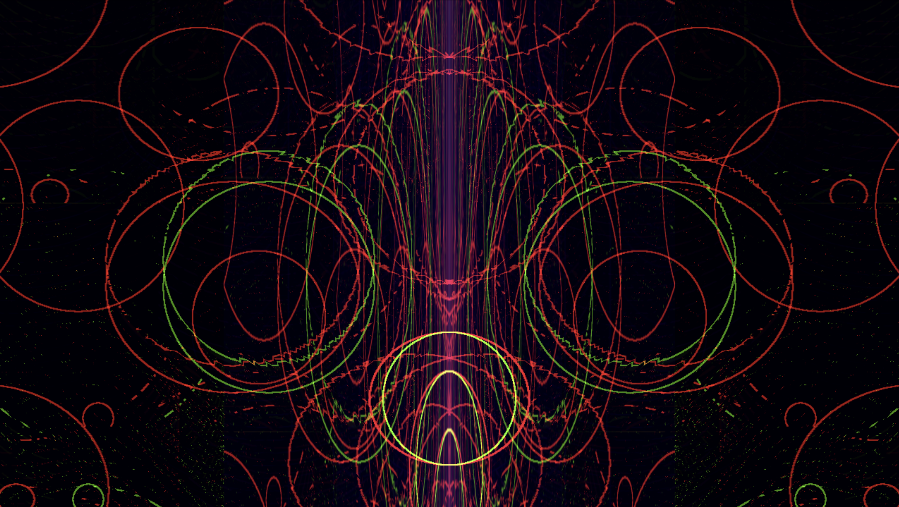
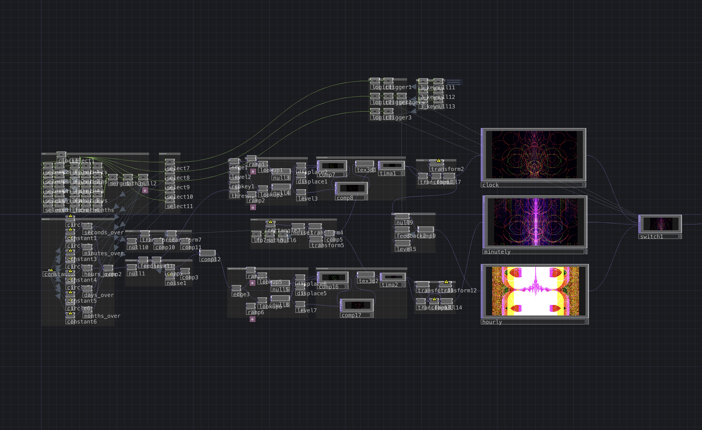

Overview
Upward Spiral functions as a clock, with each shape correlating to a measure of time. Seconds, minutes, hours, days and years are all represented by an upward flow of a circle. In this sense, Upward Spiral is ever-changing and infinitely unique. With each passing minute and hour, a flux of energy fills the screen - a reminder that as the world continues to change, pulses of light are inevitable.


Click image to view gallery
Methods
A Clock TOP lies at the center of this project, referenced for its live output of each interval of time. A Count TOP then notes of each passing interval, a value then used in a calculation referencing the screen height. This enables a scaled transform in which one pass of the height is equivalent to that unit's length of time. There is a distinct calculation of this for seconds, minutes, hours, days and months- each applied to an individual circle. Using various Ramp and Displace TOPs, the image if these circles is altered to create the idle output. A trigger CHOP listens for increase in the minutes and hours counters, and then queues an effect to mark the change. This effect is achieved by switching between three distinct video outputs with different effects. Thus, each minute causes a pulse of light and each hour causes a grand wave of glow.

Click image to view gallery